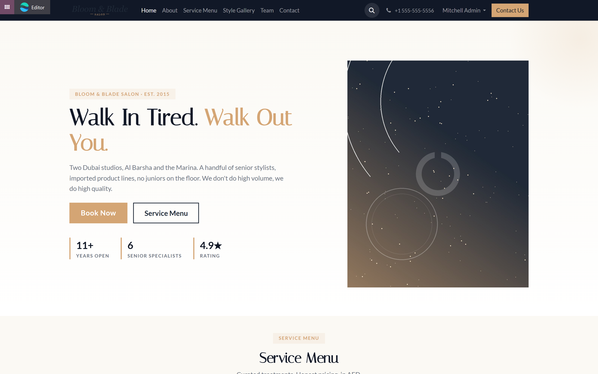
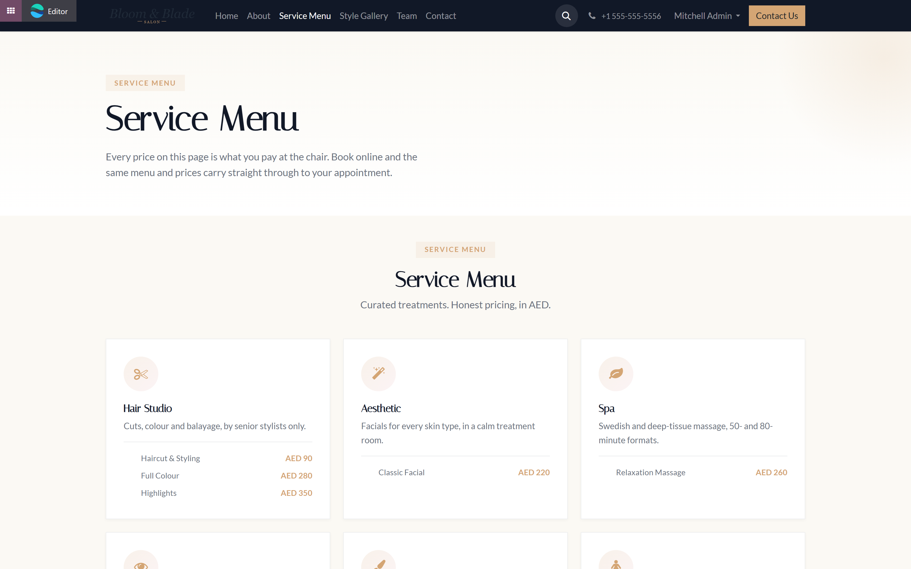
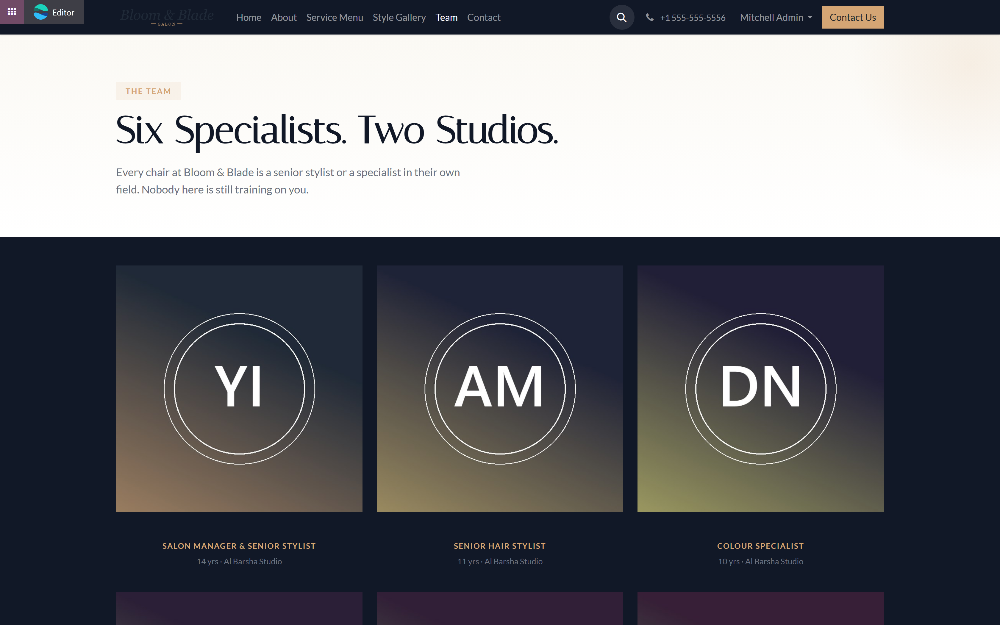
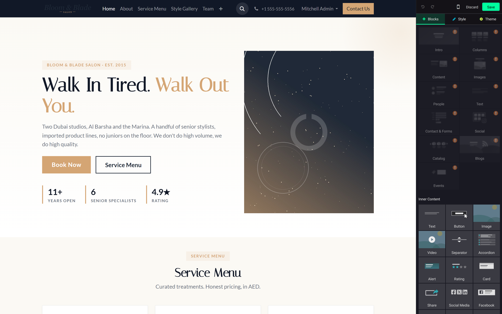
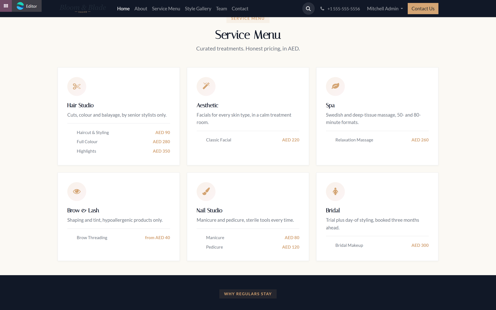
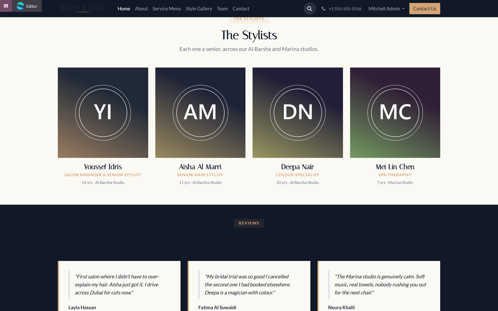
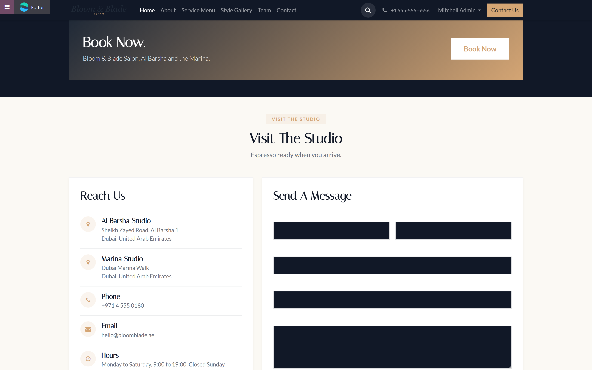
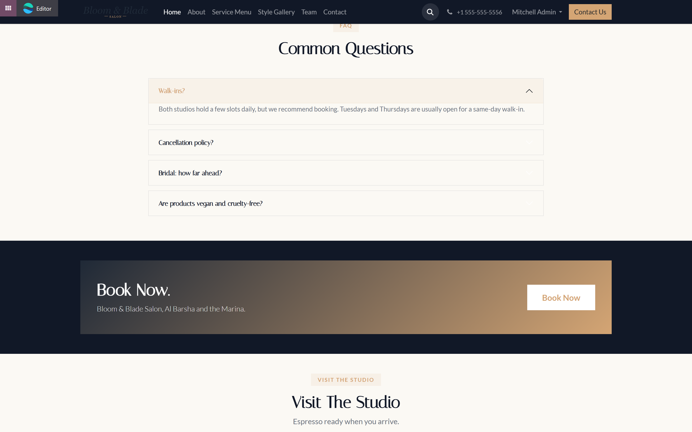

What this theme does
This module is a website theme: nine drag and drop sections (Odoo calls them snippets) built for a hair salon, nail studio, barbershop, spa or aesthetic clinic, plus a homepage, an About page, a Services page, a Style Gallery page, a Team page and a Contact page already built out of those same nine snippets. Install it and your site is not empty on day one: it looks like a finished salon website, with a demo business's name, prices and team on it, ready for you to replace with your own.

Before you start
You need Odoo 19, Community or Enterprise, with the Website app installed. Nothing else is required. Install this theme the way you install any app, from Apps, then search for it and press Activate.
The theme's own pages and snippets are there whether or not you install with demo data on. What changes with demo data is the business name in your header, footer and browser tab: with demo data on, your company is renamed to "Bloom & Blade Salon" so the header matches the page content exactly like the screenshots in this guide. Without demo data, your own company's name stays exactly as it already was.
The pages you get on day one
Open your website and you will find six pages already published and already in the header menu: Home, About, Service Menu, Style Gallery, Team and Contact. Every one of them is built from the nine snippets described in section 4, so nothing about them is locked; every page on your site, including these, opens the same way in the website editor.


Dropping a snippet onto a page
Open any page on your site and press Edit, top right. This puts the page into edit mode: your changes are not visible to visitors until you press Save.
In edit mode, the Blocks tab on the right lists block categories: Intro, Content, Images, People, Text, Contact & Forms and a few more. This theme's nine snippets are registered under those same categories (Salon Hero under Intro, Salon Services under Content, Salon Team under People, and so on), the same way core Odoo's own blocks are. Press and hold on the category tile you want, drag it onto the page at the spot where you want the new section, and release.

Once a snippet is on the page, click any piece of text on it to edit that text directly, the same way you edit any Odoo website page. Click an image to replace it (section 5). When you are done, press Save in the top bar.
What each of the nine snippets is for
- Salon Hero. The first thing a visitor sees: a headline, a short line about your business, a Book Now button and a Service Menu button. Use it once, at the top of your homepage.
- Salon Services. A service menu in six categories, each with two or three named items and a price. Edit this one first (section 7).
- Salon Features. Four short reasons a client should pick you, each with its own icon.
- Salon Style Gallery. Six work tiles: an image, a category tag, a title and a caption. Use it for a before-and-after gallery or a portfolio of recent work.
- Salon Team. Four stylists on the homepage teaser. The dedicated Team page carries all six.
- Salon Testimonials. Three client quotes, each with a name and a short context line.
- Salon FAQ. A four question accordion for the questions you actually get asked.
- Salon Booking CTA. One band, one button, one job: get the visitor to press Book Now.
- Salon Contact. Address, phone, email and hours on the left, a working contact form on the right.


Swapping the photos
The hero panel, the six style gallery tiles and the six team photos that ship with this theme are generated abstract graphics in the salon's own gold and charcoal colours, not photographs of real people or a real salon. They exist so the theme never looks empty out of the box, but they are meant to be replaced.
To replace one, go into edit mode (section 3), click directly on the image, and the website editor's own image panel opens: upload your own photo, or pick one already in your Odoo media library, the same way you would replace any image on any Odoo website page. Nothing about this theme changes how image replacement works.
Changing the colours and fonts
This theme's colours, a warm gold, a dark charcoal, a soft blush accent, and its two fonts, a serif headline font and a plain body font, are set once, in the theme's own colour palette. Open Website > Configuration > Theme (or press Theme in the edit mode side panel) and use the standard Odoo colour and font pickers there; they apply to every snippet in this theme at once, because every snippet uses the same palette rather than its own hard coded colours.
Putting in your own services and prices
Open the Service Menu page (or find the Salon Services snippet on your homepage), press Edit, and click directly on a service name or its price. Both are plain text on the page: type over them the same way you would edit a paragraph. Add or remove a line by copying an existing row and editing the copy, or by deleting a row you do not need. There is no separate form behind this snippet; what you see on the page is what is stored, because it is the page's own content, not a linked product record.
Adding your own team
Click on a name, role or credential line under any stylist's photo on the Salon Team snippet or the Team page and edit it directly, the same way as the service menu. To add a member on the Team page, copy an existing stylist's whole card (photo, name, role and credential line together) and paste it, then edit the copy; to remove one, delete their card. Replace each photo the way described in section 5.
Pointing Book Now at your booking portal
Every Book Now button in this theme links to /salon/book by default. That address is the public booking page added by Way4Tech's Salon Management module, sold separately: install it alongside this theme and Book Now becomes a live booking form from day one, with nothing else to configure.

If you are not using that module, or you use a different booking system entirely, click a Book Now button in edit mode, open the link settings (the link icon in the text toolbar that appears when you select the button), and type your own web address over /salon/book. Every Book Now button on the site is a separate link, so update each one on the pages you use: the hero, the booking band, and the Book Online link on the Contact page.
Editing the FAQ
Open the Salon FAQ snippet, press Edit, and click a question or its answer to change the wording, the same way as any other text on the page. To add a question, copy one whole question-and-answer pair and paste it below the others, then edit the copy; to remove one, delete its pair.

Publishing your changes
Any edit you make while a page is in edit mode is only visible to you until you press Save, top right. Once saved, the page is live immediately, no separate publish step, so long as the page itself is marked Published; the switch for that is the Unpublished / Published toggle in the top bar of the website editor, on the page you are viewing.
What this theme does not do
Said plainly, so nothing here is a surprise after you buy it.
- No online booking of its own. Book Now is a link, not a booking form. The form itself lives at /salon/book, served by Way4Tech's Salon Management module, sold separately.
- No real photography. The hero, gallery and team images that ship with the theme are generated abstract graphics, not photographs. Replacing them with your own is the first thing to do (section 5).
- No payment or shopping cart. This is a brochure and booking entry point, not an online store.
- No blog or events calendar. Add the standard Odoo Blog or Events app alongside this theme if you want one; neither is included in it.
- No multi-language translation of the demo copy. The service menu, team and FAQ text ship in English; translating them is a step you do yourself, through Odoo's own translation tools.